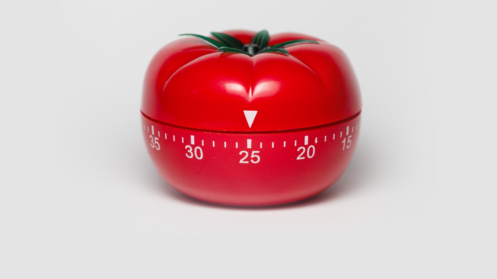

The Pomodoro Technique
The Pomodoro Technique is a time management method based on 25-minute stretches of focused work broken by five-minute breaks. Longer breaks, typically 15 to 30 minutes, are taken after four consecutive work intervals.

Change of environment
Some people like the complete silence of a library setting, while others like the stimulation of a busy café. Some students prefer to work at their desks, while others may find a sunny outdoor spot more comfortable. The best study environment for you is the one that feels most productive, so try out a few places to see which works best. Don’t want to wander away from home? Try making your desk more cozy/aesthetic so studying wouldn’t feel like a chore.
Study with friends/classmates
Working together helps develop good study habits, increases collaboration on group projects, and boosts confidence.